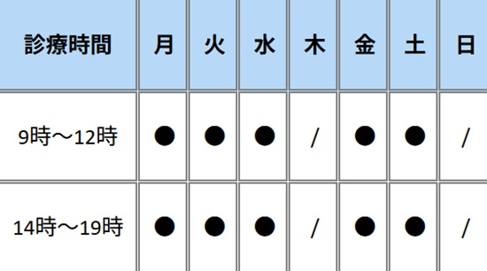
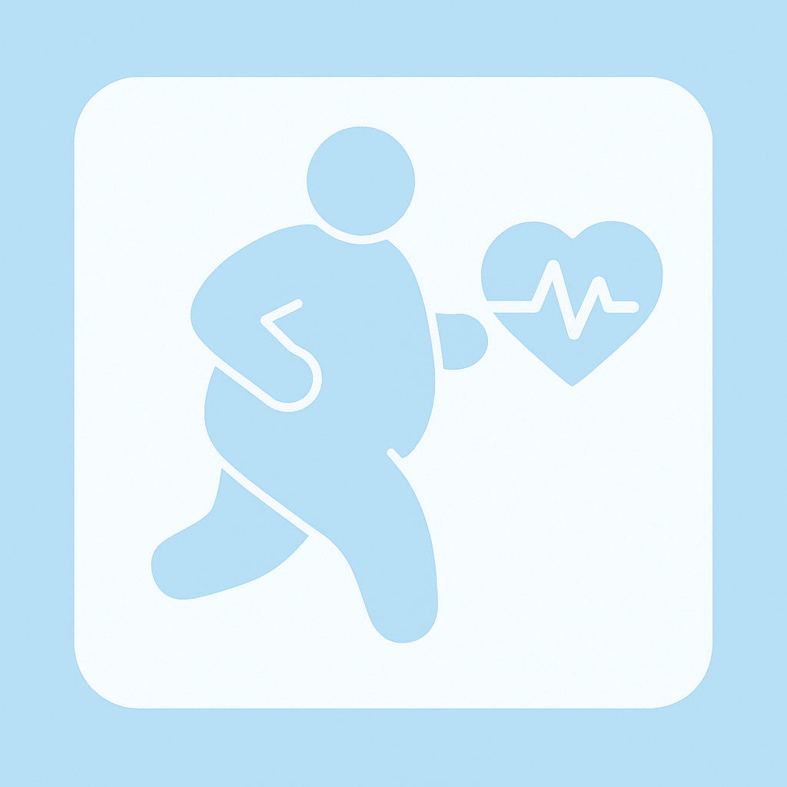
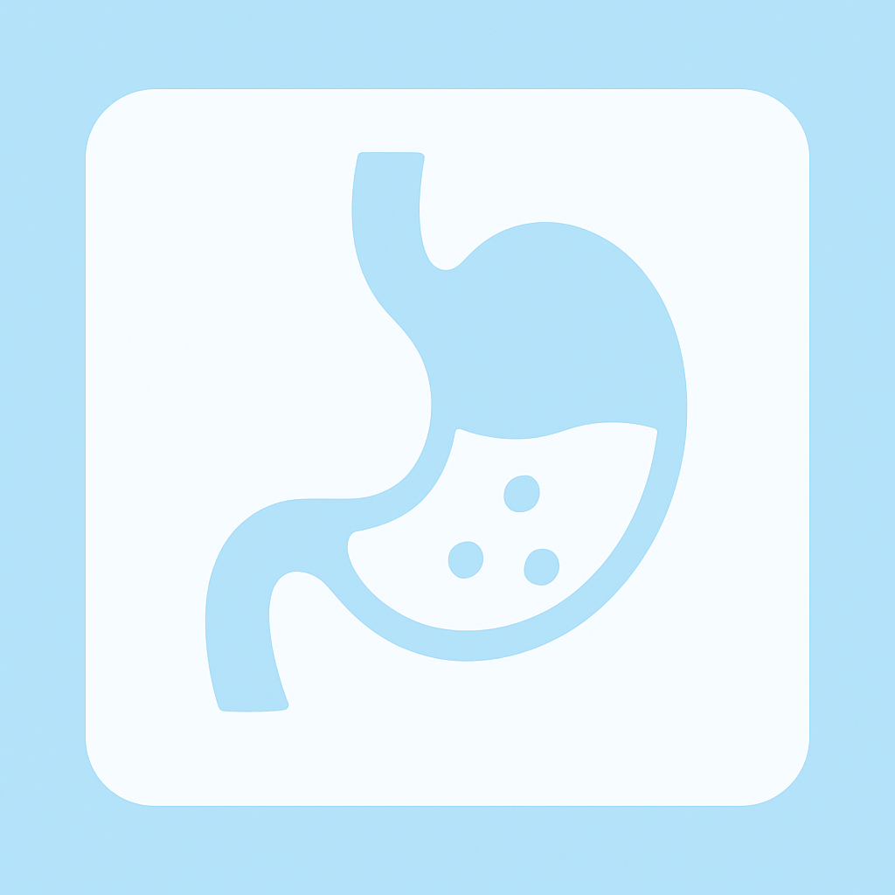

地域の皆さまの健康を見守り
未来の安心をしっかりと支える
ホームドクターであり続けます
地域に根ざしたホームドクターとして、日々の暮らしにそっと寄り添い、皆さまの未来を支えていく医療を目指しています。
小さな体調の変化や、なんとなく不安な気持ちも、遠慮なくご相談ください。
丁寧な対話と適切な診療で、安心できる毎日をともにつくります。
地域の健康を見守り、人生の節目に寄り添う存在として、長く信頼されるクリニックであり続けます。
診察時間

休診日：木曜・土曜午後・日曜
※祝祭日も診察を行っておりますが、休診日もございますので、事前にご確認ください。
おしらせ
今年もインフルエンザの予防接種を開始いたしました。予約制となっておりますので、お電話または受付にてご予約をお願いいたします。 例年、予約が集中しやすいため、早めのご予約をおすすめいたします。
年末年始の休診日は、12月29日(金)～1月4日(木)となります。 年始は1月5日(金)より通常診療を再開いたします。 皆様にはご不便をおかけしますが、何卒ご了承くださいますようお願いいたします。
今年も健康診断を実施しております。定期的な健康チェックは、病気の早期発見・予防にとても重要です。 各種健康診断メニューをご用意しておりますので、ご希望の方はお電話にてお申し込みください。
当院では引き続き、新型コロナウイルス感染症対策を徹底しております。 ご来院の際には、マスクの着用、手指消毒にご協力をお願いいたします。 また、発熱や風邪症状のある方は、事前にお電話でご相談いただけるとスムーズにご案内が可能です。
2024年より、オンライン診療を一部導入いたしました。 通院が難しい方や、遠方にお住まいの方にご利用いただけます。 ご希望の方は、当院スタッフまでお問い合わせください。 皆様の健康をサポートできるよう、スタッフ一同努めてまいります。 何かご不明な点がございましたら、お気軽にお問い合わせください。
院長挨拶
院長 佐藤太郎
診察内容


胃痛、胃もたれ、胸やけ、便秘、下痢などの消化器系の不調に対応しています。必要に応じて胃カメラや超音波検査などを実施し、胃腸の健康をサポートします。
咳、息切れ、胸の痛みなど、呼吸器系の症状について診察を行っています。季節性の喘息やアレルギー性鼻炎、慢性閉塞性肺疾患（COPD）などにも対応し、適切な治療と予防をサポートします。
当院について
医院の理念・方針
私たちの理念は、単に病気を治療することにとどまらず、患者様が心身ともに健やかな生活を送るために、あらゆる面からサポートすることです。
診療を通じて、皆様が健康で充実した日々を送るお手伝いをすることを使命と考えています。
スタッフ紹介
その後、地域医療への貢献を目指し、佐藤内科医院を開院。
専門分野： 生活習慣病、呼吸器疾患、内科全般
コメント： 患者様にとって気軽に相談できる「かかりつけ医」を目指しています。
どんな小さな不安でも、まずはご相談ください。
得意分野： 親身な対応、注射・採血技術、健康管理指導
メッセージ： 安心して治療を受けていただけるよう、いつも笑顔でお待ちしています。
些細なことでもお気軽にご相談ください。
得意分野： 血液検査、心電図検査、超音波検査
コメント： 検査は不安が伴うこともありますが、できるだけリラックスしていただけるよう、優しく丁寧な対応を心がけています。
得意分野： 受付業務、カルテ管理、医療費計算
コメント： 皆様に気持ちよくご利用いただけるよう、笑顔と真心を大切にしております。
初めての方もどうぞ安心してお越しください。
アクセス（所在地）／ お問い合わせ
〒123-4567 東京都台東区上野 0 丁目 0 - 0
【アクセス】
最寄駅: JR 上野より徒歩 5 分
当院専用の無料駐車場 10 台分あり
ご来院の際は、交通状況にご注意ください。
最寄駅から徒歩 5 分の距離にあり、便利な立地です。
【お問い合わせ】
電話番号: 00-0000-0000
ファックス: 00-0000-0000
Eメール: info@sato-clinic-test.jp